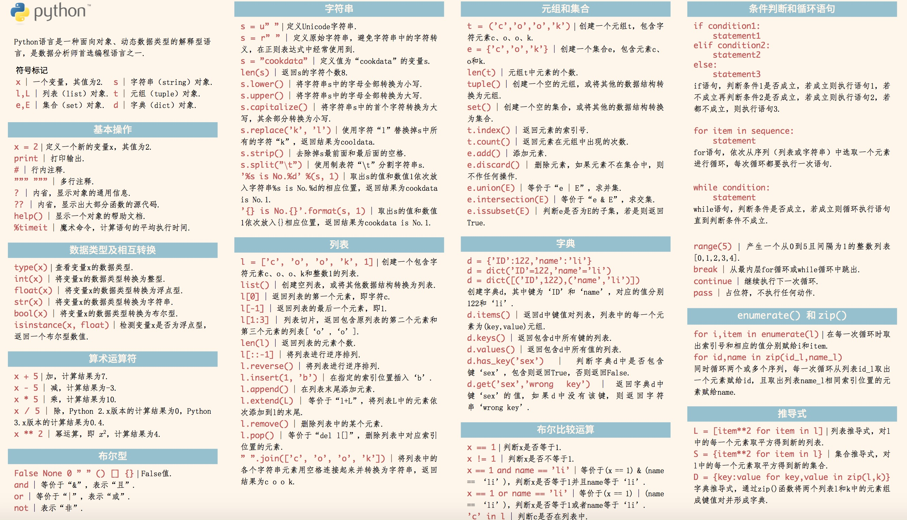
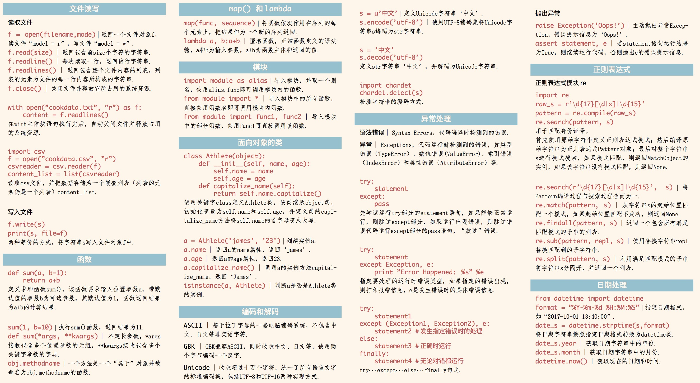

数据科学语言 Python 入门到熟悉¶
初识 Python¶
Python是一门广受欢迎的编程语言，其简洁、易读的语法使其成为编程入门的理想选择。对于非计算机背景的学习者，Python尤其友好。代码可读性强，易于理解他人的逻辑和编写清晰的代码。
Python提供了丰富的基础代码库，涵盖了网络、文件、GUI、数据库、文本等多个领域，被戏称为“内置电池（batteries included）”。这意味着在Python开发中，许多功能都可以直接使用现成的代码，而无需从零开始。此外，Python还拥有大量的第三方库，为开发者提供了更多便利。
许多知名网站和公司，如YouTube、Instagram、Google、Yahoo等，以及NASA都广泛使用Python。在数据科学领域，Python更是占据绝对优势的地位。具有计算机科学背景的从业者在数据科学工作中经常使用Python。虽然在统计学领域，有些同学习惯使用R语言，但Python同样提供了强大的数据科学工具，使得从R迁移到Python变得轻松。
Python与大数据¶
- 尽管大数据领域主要由Java、Scala等语言主导，但Python也在这个领域崭露头角。从早期的Hadoop生态中使用Python脚本完成Map-Reduce任务，到现在广泛使用的Spark，Python都提供了无缝衔接的接口。虽然Java等语言在大数据处理方面仍占主导地位，但Python在效率上与其他语言并无太大差异。
Python官方中文文档¶
- 学习Python的最佳途径之一是阅读官方中文文档。它提供了全面的教程和参考资料，帮助学习者更好地理解Python的各个方面。详细内容请参阅官方中文文档。
获取帮助¶
在学习Python过程中，获取帮助是非常重要的一部分。以下是几种获取帮助的方法：
内置帮助函数
help：Python提供了内置的help()函数，可用于获取函数、模块和类的帮助信息。你可以在交互式解释器中使用help()函数，或在脚本中调用它来获取详细的帮助文档。Jupyter Lab 中的快捷键
Shift+TAB：在Jupyter Lab（或 Notebook）中，你可以使用Shift+TAB组合键来获取有关函数、方法或模块的简要描述。按住Shift键并连续按两次TAB键，将会显示更详细的帮助信息。dir函数：使用内置的dir()函数可以列出一个模块、类或对象的所有属性和方法。这有助于你了解可用的功能，并快速查找需要的信息。
这些方法将有助于你更好地理解和使用Python中的各种功能。在学习和实践中，熟练使用这些获取帮助的方法对于编写高效的Python代码至关重要。
import numpy as np
np.array
help(np.array)
import datetime
help(datetime.date)
!ls -l
total 2292 -rw-r--r-- 1 root root 90385 Nov 29 11:36 1-python.ipynb -rw-r--r-- 1 root root 768 Nov 29 06:39 2-numpy_pandas.ipynb -rw-r--r-- 1 root root 5349 Nov 29 10:00 ShangHai.txt -rw-r--r-- 1 root root 1162059 Nov 29 10:00 python-cheatsheet1.png -rw-r--r-- 1 root root 1075965 Nov 29 10:00 python-cheatsheet2.png
Python 基本数据类型: 变量，运算，表达式¶
官方教程：https://docs.python.org/zh-cn/3.10/library/stdtypes.html
基本数据类型：
整型 (int)： 整型是Python中表示整数的基本数据类型。它支持常见的整数运算，如加法、减法、乘法、除法等。在处理数学运算时，要注意清楚变量的数据精度，以避免精度丢失。
浮点型 (float)：浮点型用于表示带有小数点的数值。在Python中，浮点数支持各种数学运算，包括指数运算 (**)、取余数 (%) 等。在处理浮点数时，要注意处理舍入误差和精度问题。
字符串 (str)：字符串是一种文本序列类型，用于表示文本数据。Python中的字符串可以使用单引号 (') 或双引号 (") 括起来。了解字符串的转义、拼接、重复、切片等操作是使用Python进行文本处理的基础。
布尔型 (bool)：布尔型只有两个取值，即 True 和 False。在条件判断和逻辑运算中，布尔型非常重要。
type 函数：type 函数用于获取一个对象的类型。了解对象的类型有助于确保在处理数据时使用正确的方法和操作。
数字类型操作
- 数字运算：Python作为计算器，支持常见的算术运算，包括加法 (+)、减法 (-)、乘法 (*)、除法 (/)、整除 (//)、取余 (%)、指数运算 (**) 等。
字符串操作
字符串拼接和重复：使用 + 来拼接字符串，使用 * 来重复字符串。
字符串转义：了解字符串中特殊字符的转义，如换行符 (\n)、制表符 (\t) 等。
字符串切片：通过切片操作可以获取字符串中的子串，灵活运用切片有助于对文本数据的处理。
字符串常见操作：Python提供了丰富的字符串内置函数，包括查找子串、替换、大小写转换等操作，这些函数对文本处理非常实用。
学习和掌握这些基本数据类型及其操作，是Python数据挖掘工具的基石，为进一步深入学习提供了坚实的基础。
数据精度（整型 vs 浮点数）¶
- 数字类型：
Int、Float- 数据精度
- Python 用作计算器
+、-、*、/、//、%、**、()、...
x = 12
type(x)
int
y = 3.1415926
type(y)
float
- 浮点数在计算机硬件中是以基数为 2 (二进制) 的小数来表示的。 例如，十进制 小数 0.625 的值为 6/10 + 2/100 + 5/1000，而同样的 二进制 小数 0.101 的值为 1/2 + 0/4 + 1/8。 这两个小数具有相同的值，唯一的区别在于第一个写成了基数为 10 的小数形式，而第二个则写成的基数为 2 的小数形式。
- 不幸的是，大多数的十进制小数都不能精确地表示为二进制小数。这导致在大多数情况下，你输入的十进制浮点数都只能近似地以二进制浮点数形式储存在计算机中。
b = 5
a = b/1.0
a
5.0
浮点数在计算机硬件中表示为以 2 为基数（二进制）的小数。
print(1/3, 6/7)
0.3333333333333333 0.8571428571428571
# 想要更美观的输出，你可能会希望使用字符串格式化来产生限定长度的有效位数:
import math
format(math.pi, '.3g')
'3.14'
format(1/3, '.3f')
# 它是十进制下的一个近似值，结果是无论往后看多少的数字，它都永远不会等于 1/3 ，只是更加更加地接近 1/3 。
'0.333'
因此 Python 通过改为显示舍入值来保留可管理的数位。
# 二进制浮点数的本质特性: 在所有支持浮点运算的语言中出现~
format(.1, '.25f')
# 牢记，即使输出的结果看起来好像就是 1/10 的精确值，实际储存的值只是最接近 1/10 的计算机可表示的二进制分数。
'0.1000000000000000055511151'
请注意这种情况是二进制浮点数的本质特性：它不是 Python 的错误，也不是你代码中的错误。 你会在所有支持你的硬件中的浮点运算的语言中发现同样的情况（虽然某些语言在默认状态或所有输出模块下都不会 显示 这种差异）。
进一步，你就能理解：由于这个 0.1 并非真正的 1/10，将三个 0.1 的值相加也无法恰好得到 0.3:
.1 + .1 + .1 == .3
False
而且，由于这个 0.1 无法精确表示 1/10 而这个 0.3 也无法精确表示 3/10 的值，使用 round() 函数进行预先舍入也是没用的:
round(.1,1) + round(.1,1) + round(.1,1) == round(.3,1)
False
可以使用 round() 函数来大致地比较近似程度:
round(.1 + .1 + .1, 10) == round(.3, 10)
True
# Python 用作计算器 +、-、*、/、//、%、**、()、...
7+2, 7-2, 7/2, 7//2, 7%2, 7**2
(9, 5, 3.5, 3, 1, 49)
x = 3
x -= 3
x
0
# ** 比 - 有更高的优先级
-7*2
# （）用来分组
(-7)**2
# 负数取余
-12 % 5
Ref: Python 中负数取余问题
玩转字符串¶
- 文本序列类型：String
' '和" "的区别？- 用 + 来拼接，用
*来重复 - 字符串的转义
- 字符串序列的切片
- 关于 String 的常见buitin函数
# ' ' 和 " " 的区别？
'123', "123", "'123'", '"123"'
('123', '123', "'123'", '"123"')
'123' == "123"
True
"'123'" == '"123"'
False
z = 'GWData-Bootcamp'
type(z)
str
str
str
a = "引力波数据探索：编程与分析实战训练营"
type(a)
str
b = '''
引力波数据探索
：
编程与分析实战
训练营
'''
type(b)
str
print(b)
引力波数据探索 ： 编程与分析实战 训练营
b
'\n引力波数据探索\n：\n编程与分析实战\n训练营\n'
# 用 + 来拼接，用 * 来重复
"Hello" + " World!", "喂~ "*3 + "你好吗？"
('Hello World!', '喂~ 喂~ 喂~ 你好吗？')
# 字符串的转义
s = 'Hello\nWorld!\tAgain!\n你好啊!\r我是'
print(s)
# s
Hello World! Again! 我是啊!
print(r'Hello\nWorld!\tAgain!\n你好啊!\r我是')
Hello\nWorld!\tAgain!\n你好啊!\r我是
# 字符串序列的切片
s[:5], s[:6]
('Hello', 'Hello\n')

S = 'Monty Python' #左闭右开
S[-12:-7], S[6:10], S[:-7], S[6:-2]
('Monty', 'Pyth', 'Monty', 'Pyth')
# Why like whis?
S[:4] + S[4:], [S[3*i : 3*i+3] for i in range(4)]
('Monty Python', ['Mon', 'ty ', 'Pyt', 'hon'])
S[::1], S[::2], S[1::3], S[::-1], S[1:-3:-2], S[-3:1:-2]
('Monty Python', 'MnyPto', 'oyyo', 'nohtyP ytnoM', '', 'hy t')
string_name[beginning: end : step]
- beginning represents the starting index of string
- end denotes the end index of string which is not inclusive
- steps denotes the distance between the two words (steps are optional).
# in, not in -> O(n)
'H' in 'Hello', 'He' in 'Hello', 'll' in 'Hello'
(True, True, True)
- See more in time complexity document for the complexity of several built-in types.
- PerformanceTips: https://wiki.python.org/moin/PythonSpeed/PerformanceTips
# find
'Hello'.find('H')
0
# join
ex = ['H','e','l','l','o','W','o','r','l','d']
ex_str = ''
for i in ex:
ex_str += i
print(ex_str)
HelloWorld
ex_str = ''.join(ex)
print(ex_str)
HelloWorld
# split (verse find...)
ex_str.split('o')
['Hell', 'W', 'rld']
import datetime
time = str(datetime.datetime.today())
print(time)
2023-11-29 12:13:10.596323
time.split(' ')[-1].split(':')[0]
'12'
# strip、lstrip、rstrip
text = ' 引力波数据探索：编程与分析实战训练营 '
dir(str)
help(str.strip)
# upper、lower
'ABCDabcd'.upper(), 'ABCDabcd'.lower(), 'abcd'.capitalize()
('ABCDABCD', 'abcdabcd', 'Abcd')
'GWData-Bootcamp'.startswith('GW'), 'GWData-Bootcamp'.endswith('GW')
(True, False)
# format vs %
print( '%s说: %s! %s!' %('某人', '哎呦', '我去') )
print( '{}说: {}! {}!'.format('某人', '哎呦', '我去') ) # Python 2.6 introduced
某人说: 哎呦! 我去! 某人说: 哎呦! 我去!
# more example for format
for name in ['Hello', 'World', 'CEO', 'ILOVECHINA']:
print('{name:<{len}}|{num:.2f}'.format(name='['+name+']',len=15, num=1024))
[Hello] |1024.00 [World] |1024.00 [CEO] |1024.00 [ILOVECHINA] |1024.00
yes_votes = 12_345_678
no_votes = 43_132_495
percentage = yes_votes / (yes_votes + no_votes)
'{:9} YES votes {:2.2%}'.format(yes_votes, percentage)
' 12345678 YES votes 22.25%'
f'{yes_votes:9} YES votes {percentage:2.2%}'
' 12345678 YES votes 22.25%'
Python string formatting: is '%' more efficient than 'format' function?
f-Strings (Python 3.6 introduced) Ref
table = {'Sjoerd': 4127, 'Jack': 4098, 'Dcab': 7678}
for name, phone in table.items():
print(f'{name:10.4s} ==> {phone:10d}')
Sjoe ==> 4127 Jack ==> 4098 Dcab ==> 7678
可变对象 vs 不可变对象 (序列类型 or 容器)¶
- 序列类型：可任何类型元素的序列结构
- 注意：留意嵌套的列表表示矩阵
- 序列类型：用 + 来拼接，用 * 来重复
- 关于 List 的常见的方法：len, append, extend, sort, pop, count, index, copy
- 关于 List 的赋值内涵：
- List 和 Tuple 有啥区别？逗号的区别！
- 外观上看是()和逗号的区别：
()'hello', 元组打包 ；元组中的一个单独的元素赋值是不允许的;
- 外观上看是()和逗号的区别：
- Set 是由不重复元素组成的无序的集：爱做逻辑运算
- | & ^ unique
# 列表
[1,2,3,4,5]
['Hello', 45, 1.5]
[
[
1, 2, 3
],
[
4, 5, 6
]
]
[[1, 2, 3], [4, 5, 6]]
[1] + [1] + [1]
[1]*10
[1, 1, 1, 1, 1, 1, 1, 1, 1, 1]
ex = ['引力波数据探索', 2, 3.1415926, True, ['LiLei', 'HanMeimei']]
ex[4]
['LiLei', 'HanMeimei']
ex[4][1]
'HanMeimei'
# 列表长度
# len
len(ex)
5
dir(list)
# append vs extend
ex.append(['append'])
ex
['引力波数据探索', 2, 3.1415926, True, ['LiLei', 'HanMeimei'], 'append', 'extend', 'extend1', 'extestset', ['append']]
ex.extend(['extend1', 'extestset'])
ex
['引力波数据探索', 2, 3.1415926, True, ['LiLei', 'HanMeimei'], 'append', 'extend', 'extend1', 'extestset']
# sort, reverse, pop, count, index
ex = [5,45,7,567,45, 35, 67, 7, 45,]
# copy
a = ex # + [100]
a
[5, 45, 7, 567, 45, 35, 67, 7, 45]
a[1] = -1
a
[5, -1, 7, 567, 45, 35, 67, 7, 45]
ex
[5, -1, 7, 567, 45, 35, 67, 7, 45]
a = ex.copy()
a[0] = -2
a
[-2, -1, 7, 567, 45, 35, 67, 7, 45]
ex
[5, -1, 7, 567, 45, 35, 67, 7, 45]
关于 List 的赋值内涵：
- 直接赋值：其实就是对象的引用（别名）。
- 浅拷贝(copy)：拷贝父对象，不会拷贝对象的内部的子对象。
- 深拷贝(deepcopy)： copy 模块的 deepcopy 方法，完全拷贝了父对象及其子对象。
b = a: 赋值引用，a 和 b 都指向同一个对象。
b = a.copy(): 浅拷贝, a 和 b 是一个独立的对象，但他们的子对象还是指向统一对象（是引用）。
b = copy.deepcopy(a): 深度拷贝, a 和 b 完全拷贝了父对象及其子对象，两者是完全独立的。
import copy
a = [1, 2, 3, 4, ['a', 'b']]
b = a # 直接赋值
c = a.copy() # 浅拷贝 (also copy.copy())
d = copy.deepcopy(a) # 深拷贝
e = a[:] # 切片赋值??
f = a + ['GW'] # ??
a, b, c, d, e, f
([1, 2, 3, 4, ['a', 'b']], [1, 2, 3, 4, ['a', 'b']], [1, 2, 3, 4, ['a', 'b']], [1, 2, 3, 4, ['a', 'b']], [1, 2, 3, 4, ['a', 'b']], [1, 2, 3, 4, ['a', 'b'], 'GW'])
a.append(5) # 改变对象
a[4].append('c') # 改变子对象
a, id(a)
([1, 2, 3, 4, ['a', 'b', 'c'], 5], 140559575716608)
b, id(b)
([1, 2, 3, 4, ['a', 'b', 'c'], 5], 140559575716608)
c, id(c)
([1, 2, 3, 4, ['a', 'b', 'c']], 140559577073920)
d, id(d)
([1, 2, 3, 4, ['a', 'b']], 140559725761088)
e, id(e)
([1, 2, 3, 4, ['a', 'b', 'c']], 140559727218624)
f, id(f)
([1, 2, 3, 4, ['a', 'b', 'c'], 'GW'], 140559575719552)
到底会不会变，好麻烦，咋记？一般怎么用呢？
Python 中的 可变对象 vs 不可变对象：
- 不可变对象，该对象所指向的内存中的值不能被改变。当改变某个变量时候，由于其所指的值不能被改变，相当于把原来的值复制一份后再改变，这会开辟一个新的地址，变量再指向这个新的地址。
- 数值类型（int和float）、字符串str、元组tuple
- 可变对象，该对象所指向的内存中的值可以被改变。变量（准确的说是引用）改变后，实际上是其所指的值直接发生改变，并没有发生复制行为，也没有开辟新的出地址，通俗点说就是原地改变。
- 列表list、字典dict、集合set
- 不可变对象，该对象所指向的内存中的值不能被改变。当改变某个变量时候，由于其所指的值不能被改变，相当于把原来的值复制一份后再改变，这会开辟一个新的地址，变量再指向这个新的地址。
Tuple
# list
a = [1,2,3,4]
b = a
a += [1]
a, b
([1, 2, 3, 4, 1], [1, 2, 3, 4, 1])
# tuple
a = (1,2,3,4)
b = a
a += (1,)
a, b
((1, 2, 3, 4, 1), (1, 2, 3, 4))
def test(x):
return x, x+1, x+2
test(3)
(3, 4, 5)
1,
(1,)
(1)
1
- Set 是由不重复元素组成的无序的集：爱做逻辑运算
set1 = [1,2,2,3,4]
set2 = [4,2,3,4,5]
set(set1), set(set2) # unique elements
({1, 2, 3, 4}, {2, 3, 4, 5})
set(set1) & set(set2), set(set1) | set(set2), set(set1) ^ set(set2), set(set1) - set(set2)
({2, 3, 4}, {1, 2, 3, 4, 5}, {1, 5}, {1})
- Dict
- key-value （键-值）
- key 是唯一的
- Dict 的属性和方法:
in, not in, keys, values, items, setdefault
dd = {
'Num1': [1,2,3,4,5],
666: '引力波数据探索',
'DICT1': {'编程与分析': 22, '实战训练营': 88},
'DICT2': 90
}
# dd['Num1']
# dd[666]
# dd['DICT1']
dd['DICT2'] = 100
dd
{'Num1': [1, 2, 3, 4, 5],
666: '引力波数据探索',
'DICT1': {'编程与分析': 22, '实战训练营': 88},
'DICT2': 100}
# in, not in
666 in dd, '引力波数据探索' in dd
(True, False)
# dd.keys()
dd.values()
dict_values([[1, 2, 3, 4, 5], '引力波数据探索', {'编程与分析': 22, '实战训练营': 88}, 100])
dd.items()
for index, (key, value) in enumerate(dd.items()):
print(index, key, value)
0 Num1 [1, 2, 3, 4, 5]
1 666 引力波数据探索
2 DICT1 {'编程与分析': 22, '实战训练营': 88}
3 DICT2 100
dd.setdefault('DICT3', 200)
200
dd
{'Num1': [1, 2, 3, 4, 5],
666: '引力波数据探索',
'DICT1': {'编程与分析': 22, '实战训练营': 88},
'DICT2': 100,
'DICT3': 200}
# 多个字典的快速合并
{
**dd,
**{'ICTP': 123}
}
{'Num1': [1, 2, 3, 4, 5],
666: '引力波数据探索',
'DICT1': {'编程与分析': 22, '实战训练营': 88},
'DICT2': 100,
'DICT3': 200,
'ICTP': 123}
List comprehensions¶
- 官方教程：https://docs.python.org/3.10/tutorial/datastructures.html#list-comprehensions
- When to Use a List Comprehension in Python
列表推导式（List comprehensions）是一种用简洁而灵活的语法创建列表的方法。它允许你通过在一行代码中描述操作，生成新的序列。
优点：
- 简洁： 列表推导式提供了一种简洁而清晰的语法，使得在一行代码中完成复杂的列表生成操作成为可能。
- 可读性： 对于简单的转换和筛选操作，列表推导式通常比传统的循环和条件语句更易读。
- 高效： 在某些情况下，列表推导式可以比传统的循环更高效，因为它们在底层使用了更快的迭代机制。
- 功能强大： 支持多层嵌套、条件筛选等复杂操作，使得生成各种形式的列表变得灵活而强大。
缺点：
- 可读性下降： 对于复杂的列表推导式，可读性可能下降，使得代码难以理解，降低了维护性。
- 不适用于复杂逻辑： 当列表生成的逻辑较为复杂时，使用传统的循环和条件语句可能更为直观，不容易出错。
- 不利于调试： 列表推导式一般在一行内完成，当出现错误时，定位问题可能相对困难。
- 可能影响性能： 在某些情况下，列表推导式可能会导致性能下降，特别是对于大规模数据集的处理。
注意事项：
- 保持可读性： 尽管列表推导式简洁，但在编写时应注意保持可读性，避免嵌套层次过深或逻辑过于复杂。
- 适度使用： 在简单的转换和筛选操作中使用列表推导式是合适的，但对于复杂逻辑，还是应该使用传统的循环和条件语句。
- 避免滥用： 不要滥用列表推导式，以免影响代码的可维护性和可读性。
- 考虑生成器表达式： 如果可能会处理大规模数据集，考虑使用生成器表达式而不是列表推导式，以降低内存占用。
- 列表推导式本身并没有并行性，它是在单线程中按顺序执行的。每个元素的计算都依赖于前一个元素的结果。虽然在某些情况下，列表推导式可能比传统的循环更高效，但它并不能实现真正的并行性。
列表推导式是一种强大而灵活的工具，但在使用时需要谨慎，根据具体情况选择合适的编程方式，以达到代码简洁、可读、高效的平衡。
squares = []
for x in range(10):
squares.append(x**2)
squares
[0, 1, 4, 9, 16, 25, 36, 49, 64, 81]
squares = list(map(lambda x: x**2, range(10)))
squares
[0, 1, 4, 9, 16, 25, 36, 49, 64, 81]
squares = [x**2 for x in range(10)]
squares
[0, 1, 4, 9, 16, 25, 36, 49, 64, 81]

squares = []
for i in range(10):
if i % 2 == 0 :
squares.append(i**2)
squares
[0, 4, 16, 36, 64]
squares = [i**2 for i in range(10) if i % 2 == 0]
squares
[0, 4, 16, 36, 64]

dd
{'Num1': [1, 2, 3, 4, 5],
666: '引力波数据探索',
'DICT1': {'编程与分析': 22, '实战训练营': 88},
'DICT2': 100,
'DICT3': 200}
[key for key, value in dd.items() if type(value) == dict ]
['DICT1']
[key for _, value in dd.items()
if type(value) == dict
for key, _ in value.items() ]
['编程与分析', '实战训练营']

[key if '实战' in key else 'Not 实战' for _, value in dd.items() if type(value) == dict for key, _ in value.items() ]
['Not 实战', '实战训练营']
# Not only list....
# 字典推导和列表推导的使用方法是类似的，只不中括号该改成大括号。直接举例说明
{key: key if '实战' in key else 'Not 实战' for _, value in dd.items() if type(value) == dict for key, _ in value.items() }
{'编程与分析': 'Not 实战', '实战训练营': '实战训练营'}
# 快速更换key和value
mcase = {'a': 10, 'b': 34}
mcase_frequency = {v: k for k, v in mcase.items()}
print (mcase_frequency)
# Output: {10: 'a', 34: 'b'}
{10: 'a', 34: 'b'}
# 生成器推导式
multiples_2 = (i for i in range(30) if i % 3 == 0)
print(type(multiples_2))
# Output: <type 'generator'>
<class 'generator'>
- 生成器 是做什么用的？请参考： https://www.cnblogs.com/MnCu8261/p/6410594.html
# 集合推导式
# 它们跟列表推导式也是类似的。 唯一的区别在于它使用大括号{}
squared = {x**2 for x in [1, 1, 2]}
print(squared)
# Output: set([1, 4])
{1, 4}
- One-lined Python: https://wiki.python.org/moin/Powerful%20Python%20One-Liners
- List Comprehensions
- lambda (map、filter、reduce)
Python 流程控制与异常处理¶

continuefor num in range(2, 10): if num % 2 == 0: print('Found an even number', num) continue print('Found a number', num)
for num in range(2, 10):
if num % 2 == 0:
print('Found an even number', num)
continue
print('Found a number', num)
Found an even number 2 Found an even number 4 Found an even number 6 Found an even number 8 Found a number 9
breakandfor ... else ...
for n in range(2, 10):
for x in range(2, n):
if n % x == 0:
print(n, 'equals', x, '*', n//x)
break
else:
# loop fell through without finding a factor
print(n, 'is a prime number')
for n in range(2, 10):
for x in range(2, n):
if n % x == 0:
print(n, 'equals', x, '*', n//x)
break
else:
# loop fell through without finding a factor
print(n, 'is a prime number')
2 is a prime number 3 is a prime number 4 equals 2 * 2 5 is a prime number 6 equals 2 * 3 7 is a prime number 8 equals 2 * 4 9 equals 3 * 3
break和else是两个互斥的条件：只有当循环里没有遇到break时，else块才会在循环结束后执行。
for i in mylist:
if i == target:
break
process(i)
else:
raise ValueError("List argument missing terminal flag.")
Compare this to a method that does not use this syntactic sugar:
flagfound = False for i in mylist: if i == theflag: flagfound = True break process(i) if not flagfound: raise ValueError("List argument missing terminal flag.") # 所以无需专门建立一个临时标记变量来标记是否找到了 target # Source: https://stackoverflow.com/a/9980752/8656360
while/for ... try ... except ...
while True:
try:
x = int(input("Please enter a number:"))
break # Don't forget stop the Loop!
except ValueError:
print("Oops! That was no valid number. Try again...")
try ... except ... (else) ... (finally) ...
def divide(x, y):
try:
result = x / y
except ZeroDivisionError:
print("division by zero!")
else:
print("result is", result)
finally:
print("executing finally clause")
>>> divide(2, 1)
>>> divide(2, 0)
>>> divide("2", "1")
except可以写多个。else和Error是互斥的；finally是跟屁虫，总少不了(执行)它。
def divide(x, y):
try:
result = x / y
except ZeroDivisionError:
print("division by zero!")
except TypeError:
print('TypeError')
else:
print("result is", result)
finally:
print("executing finally clause")
# >>> divide(2, 1)
# >>> divide(2, 0)
divide("2", "1")
TypeError executing finally clause
函数¶
官方教程：https://docs.python.org/3.10/tutorial/controlflow.html#more-on-defining-functions
- def关键字
- 用括号表示参数列表
- 语句需要缩进
Python 面向对象编程¶
零门槛入门：
- Python面向对象编程从零开始（1）——从没对象到有对象
- Python面向对象编程从零开始（2）—— 与对象相互了解
- Python面向对象编程从零开始（3）—— 小姐姐请客上篇
- Python面向对象编程从零开始（4）—— 小姐姐请客下篇
- Python面向对象编程从零开始（5）—— 小姐姐要买房
官方教程：https://docs.python.org/3.10/tutorial/classes.html
面向过程编程
- 过程为核心： 面向过程编程是以过程或函数为中心，将程序分解为一个个独立的步骤，通过调用这些步骤来完成任务。
- 数据和操作分离： 数据和操作数据的函数是分离的，数据被传递给函数进行处理。
- 简洁直观： 面向过程的代码通常比较直观，适用于简单的任务和算法。
面向对象编程
- 对象为核心： 面向对象编程是以对象为核心，将数据和操作数据的方法封装在一起，形成对象。
- 封装性： 对象封装了数据和行为，通过定义类来创建对象，使得代码更具可重用性和可维护性。
- 继承性： 允许创建一个类，该类是现有类的子类，从而可以继承现有类的属性和方法。
- 多态性： 允许使用一个实体的多种形式或类型，提高了灵活性。
选择面向过程： 适用于简单的、线性的任务，代码相对较短，不需要复杂的结构。
选择面向对象： 适用于需要处理复杂问题、具有多个实体（对象）相互交互的场景，代码更易维护、扩展和理解。
综合考虑问题的复杂度和可维护性，选择合适的编程范式来完成任务。在实际开发中，常常采用面向对象的方法，因为它更灵活、可扩展，适用于大型项目和团队协作。
# 面向过程
std1 = {'name': 'Michael', 'score': 98}
std2 = {'name': 'Bob', 'score': 81}
#处理学生信息可以通过函数实现，比如打印学生的成绩：
def print_score(std):
print(f"{std['name']} : {std['score']}")
print_score(std1)
print_score(std2)
Michael : 98 Bob : 81
# 面向对象
class Student: # 类
def __init__(self, name, score):
self.name = name # 类的属性
self.score = score
def print_score(self): # 类的方法
print(f"{self.name} : {self.score}")
st1 = Student('amy', 120) # 类对象的实例化
st2 = Student('jack', 108)
st1.print_score()
st2.print_score()
amy : 120 jack : 108
import random as r
class Fish:
def __init__(self):
self.x = r.randint(0, 10)
self.y = r.randint(0, 10)
def move(self):
self.x -= 1
print("我的位置是：", self.x, self.y)
# 利用继承演示鱼游动方向位置
class Goldfish(Fish):
pass
class Salman(Fish):
pass
class Shark(Fish):
# 这里重写了 __init__ 方法，就会覆盖掉父类的方法
# 而用到 super 函数后就可以继续使用父类的方法
def __init__(self):
# super函数不用给定任何基类的名字(如下)，它会一层层找出代码所有父类里面对应的方法，
# 要改变该类的继承关系时只需修改这个类的父类就行就是括号里面的Fish。
super().__init__() # super().重写的属性或方法
self.hungry = True
def eat(self):
if self.hungry:
print("我要开吃了。。。")
self.hungry = False
else:
print("肚肚不饿哦。。。")
goldfish1 = Goldfish()
Salman1 = Salman()
print('goldfish1 at:', goldfish1.x, goldfish1.y)
print('Salman1 at:', Salman1.x, Salman1.y)
goldfish1 at: 6 5 Salman1 at: 9 8
goldfish1.move(), Salman1.move();
我的位置是： 2 5 我的位置是： 5 8
print('goldfish1 at:', goldfish1.x, goldfish1.y)
print('Salman1 at:', Salman1.x, Salman1.y)
goldfish1 at: 2 5 Salman1 at: 5 8
Python 文件读写¶
官方教程：https://docs.python.org/3.10/tutorial/inputoutput.html#reading-and-writing-files
openwith:with语句用于简化文件或资源的管理，确保在代码块执行前后资源被正确地分配和释放。主要应用在文件处理、网络连接、数据库连接等需要进行资源管理的场景。- 机理:
with语句使用上下文管理器对象，该对象定义了__enter__和__exit__方法。当执行进入with代码块时，会调用__enter__方法获取资源；当退出 with 代码块时，会调用__exit__方法进行资源释放。 - 特点:
- 自动资源管理：
with语句确保在代码块执行结束后资源会被自动释放，即使出现异常。 - 可读性：代码更加清晰简洁，避免了手动管理资源带来的繁琐性。
- 异常处理：
__exit__方法中可以处理异常，使得异常发生时能够进行适当的处理，比如关闭文件或回滚数据库事务。
- 自动资源管理：
- 机理:
# shell 运行命令
!ls -lh ShangHai.txt
-rw-r--r-- 1 root root 5.3K Nov 29 10:00 ShangHai.txt
for line in open('./ShangHai.txt', 'rb'):
print(line.decode('utf8').split(" "))
['\ufeffOn', 'the', 'morning', 'of', 'June', '20th', '1830,', 'Lord', 'Amnerst,', 'the', 'first', 'British', 'ship', 'to', 'visit', 'Shanghai', 'was', 'anchored', 'at', 'the', 'mouth', 'of', 'Huangpu,', 'two', 'Europeans', 'strode', 'ashore.', 'These', 'men', 'were', 'Charles', 'Gutzlaff,', 'translator', 'and', 'missionary,', 'and', 'Hill', 'Lynsay,', 'representative', 'of', 'the', 'British', 'East', 'India', 'Company.', 'Crowds', 'gathered', 'together', 'to', 'witness', 'these', 'so-called', 'barbarians;', 'though', 'in', 'his', 'report', 'Linsay', 'mentioned', 'cotton', 'cloth', 'and', 'calico,', 'his', 'real', 'objective', 'was', 'to', 'sell', 'opium.', 'Nine', 'years', 'later,', 'the', 'opium', 'war', 'broke', 'out.', 'After', 'the', 'Chinese', 'was', 'defeated', 'by', 'Britain,', 'Shanghai', 'became', 'one', 'of', 'the', 'cities', 'opened', 'to', 'foreign', 'trade', 'by', 'the', '1842', 'Treaty', 'of', 'Nanking,', 'and', 'a', 'new', 'city', 'began', 'to', 'develop.\n'] ['Shanghailanders\n'] ['Until', 'the', '19th', 'century', 'and', 'the', 'first', 'opium', 'war,', 'Shanghai', 'was', 'considered', 'to', 'be', 'essentially', 'a', 'fishing', 'village.', 'However,', 'in', '1914,', 'Shanghai', 'had', '200', 'banks', 'dealing', 'with', '80%', 'of', 'its', 'foreign', 'investments', 'in', 'China.', 'Citizens', 'of', 'many', 'countries', 'on', 'all', 'continents', 'gathered', 'in', 'Shanghai', 'to', 'live', 'and', 'work', 'in', 'the', 'ensuing', 'decades.', 'By', '1932,', 'Shanghai', 'had', 'become', 'the', 'world’s', '5th', 'largest', 'city', 'and', 'home', 'to', '70,000', 'foreigners.', 'Foreign', 'residents', 'of', 'the', 'city', 'called', 'themselves', 'Shanghailanders.', 'From', '1842', 'to', '1949,', 'while', 'the', 'British', 'established', 'settlement', 'in', 'a', 'section', 'of', 'Shanghai,', 'the', 'French', 'and', 'the', 'American', 'also', 'established', 'their', 'own', 'settlements;', 'these', 'settlements', 'were', 'later', 'called', 'concessions.', 'World', 'War', 'II', 'marked', 'Shanghai', 'as', 'a', 'destination', 'for', 'refugees.', 'Between', '1937', 'and', '1939,', 'an', 'estimated', '20,000', 'Jews', 'traveled', 'to', 'Shanghai', 'to', 'flee', 'the', 'Nazis,', 'Shanghai', 'was', 'the', 'only', 'city', 'where', 'Jews', 'were', 'welcome', 'without', 'condition.', 'Today,', 'the', 'streets', 'of', 'the', 'French', 'concession', 'and', 'other', 'foreign', 'settlements', 'had', 'changed', 'to', 'become', 'what-to-do', 'n’', 'you-need', 'avenues,', 'while', 'the', 'Bund,', 'a', 'stretch', 'of', 'Western', 'buildings', 'is', 'still', 'representing', 'the', 'Western', 'influence', 'that', 'dominated', 'so', 'much', 'of', 'the', 'city’s', 'history.', '', '\n'] ['General', 'Facts\n'] ['Shanghai', 'is', 'a', 'city', 'in', 'East', 'China;', 'it', 'is', 'the', 'largest', 'city', 'of', 'the', 'People’s', 'Republic', 'of', 'China', 'and', 'the', '8th', 'largest', 'city', 'in', 'the', 'world.', 'Due', 'to', 'its', 'rapid', 'growth', 'of', 'the', 'last', 'two', 'decades,', 'it', 'has', 'again', 'become', 'a', 'global', 'city;', 'it', 'is', 'also', 'known', 'as', 'the', 'Paris', 'of', 'the', 'East.', 'According', 'to', 'the', '2009', 'census,', 'Shanghai', 'has', 'a', 'population', 'of', 'about', '19', 'millions,', 'four', 'times', 'more', 'than', 'the', 'people', 'in', 'New', 'Zealand,', 'registered', 'migrants', 'comprise', 'of', 'one-third', 'of', 'the', 'population', 'in', '2007.', 'However,', 'as', 'the', 'most', 'success', 'of', 'cities', 'of', 'the', 'one-child', 'policy,', 'Shanghai', 'has', 'the', 'lowest', 'fertility', 'rate', 'in', 'China.', 'The', 'main', 'language', 'spoken', 'in', 'Shanghai', 'is', 'Shanghainese,', 'one', 'of', 'the', '248', 'Chinese', 'dialects', 'identified', 'by', 'Wikipedia.', 'It', 'is', 'gigantically', 'different', 'from', 'Mandarin.', 'If', 'you', 'were', 'to', 'say', 'something', 'in', 'Shanghainese', 'to', 'a', 'Beijinger,', 'he’s', 'bound', 'to', 'get', 'a', 'confused', 'stroke', 'and', 'possibly', 'get', 'some', 'eye-rolling.', 'Shanghainese', 'kids', 'start', 'learning', 'English', 'in', 'the', 'first', 'grade,', 'like', 'it', 'or', 'not,', 'English', 'is', 'now', 'a', 'compulsory', 'course', 'for', 'all', 'pupils', 'in', 'Shanghai.', 'In', 'a', 'decade’s', 'time,', 'everyone', 'in', 'the', 'city', 'may', 'speak', 'English', 'or', 'a', 'hybrid', 'language', 'of', 'Chinese', 'and', 'English,', 'known', 'as', 'Chinglish.', '\n'] ['Economy\n'] ['Shanghai', 'means', 'on', 'top', 'of', 'the', 'sea,', 'but', 'the', 'fact', 'is,', 'quite', 'a', 'lot', 'of', 'local', 'Shanghainese', 'have', 'never', 'seen', 'the', 'sea', 'despite', 'Shanghai', 'is', 'not', 'more', 'than', 'one', 'hundred', 'miles', 'from', 'the', 'Pacific', 'Ocean;', 'and', 'it', 'is', 'not', 'blue', 'as', 'you', 'may', 'expect,', 'because', 'of', 'pollutions', 'from', 'factories', 'around', 'the', 'Yangtze', 'River', 'delta.', 'In', '2005,', 'Shanghai', 'was', 'termed', 'to', 'be', 'the', 'world’s', 'largest', 'port', 'for', 'cargo', 'and', 'it', 'is', 'now', 'the', 'world’s', 'busiest', 'seaport.', 'It', 'handled', '29', 'million', 'TEUs', 'in', '2010,', '25%', 'of', 'Chinese', 'industrial', 'output', 'comes', 'from', 'the', 'city', 'out', 'of', 'sea,', 'and', 'Shanghai', 'produces', '30%', 'of', 'China’s', 'GDP.', 'By', 'the', 'end', 'of', '2009,', 'there', 'were', '787', 'financial', 'institutions', 'in', 'Shanghai,', 'of', 'which', '170', 'were', 'foreign', 'invested.', 'In', '2009,', 'the', 'Shanghai', 'Stock', 'Exchange', 'ranked', 'third', 'among', 'worldwide', 'stock', 'exchanges', 'in', 'terms', 'of', 'traded', 'volume', 'and', 'trading', 'volume', 'of', 'six', 'key', 'commodities', 'including', 'rubber,', 'copper', 'and', 'zinc', 'under', 'Shanghai', 'Future', 'Exchange', 'all', 'ranked', 'first', 'across', 'the', 'world.', 'Shanghai', 'is', 'now', 'ranked', '5th', 'in', 'the', 'latest', 'edition', 'of', 'the', 'Global', 'Financial', 'Center', 'Index', 'published', 'by', 'the', 'city', 'of', 'London.\n'] ['Urban', 'Development\n'] ['One', 'uniquely', 'Shanghainese', 'cultural', 'element', 'is', 'the', 'SHI', 'Ku', 'Men', 'residences,', 'which', 'is', 'a', 'two', 'or', 'three', 'storey', 'townhouses.', 'The', 'Shi', 'Ku', 'Men', 'is', 'a', 'cultural', 'blend', 'of', 'elements', 'found', 'in', 'Western', 'architecture,', 'traditional', 'Chinese', 'architecture', 'and', 'social', 'behavior.', 'Today,', 'many', 'of', 'the', 'area', 'with', 'classic', 'Shi', 'Ku', 'Men', 'stood', 'had', 'been', 'redeveloped', 'for', 'modern', 'Shanghai,', 'with', 'only', 'a', 'few', 'areas', 'remaining.', 'During', 'the', '1990s,', 'Shanghai', 'had', 'the', 'largest', 'agglomeration', 'of', 'construction', 'cranes;', 'since', '2008,', 'Shanghai', 'has', 'boasted', 'more', 'free', 'standing', 'buildings', 'for', '400', 'meters', 'than', 'any', 'other', 'cities,', 'The', 'Shanghai', 'World', 'Financial', 'Center', 'is', 'currently', 'the', 'third', 'tallest', 'building', 'in', 'the', 'world;', 'in', 'the', 'future,', 'the', 'Shanghai', 'Tower,', 'straight', 'to', 'completion', 'in', '2014,', 'will', 'be', 'the', 'tallest', 'in', 'China.', 'Meanwhile,', 'Shanghai', 'is', 'sinking', 'at', 'a', 'rate', 'of', '1.5cm', 'a', 'year.', 'Shanghai’s', 'rapid', 'transit', 'system,', 'Shanghai', 'Metro,', 'extends', 'to', 'every', 'core', 'neighbor', 'districts', 'in', 'and', 'to', 'every', 'suburban', 'district.', 'As', 'of', '2010,', 'there', 'were12', 'metro', 'lines,', '273', 'stations', 'and', 'over', '420', 'km', 'of', 'tracks', 'in', 'operation,', 'making', 'it', 'the', 'largest', 'network', 'in', 'the', 'world.', '', '', '', '', '', '', '', '', '\n'] ['And', 'the', 'shuttle', 'maglev', 'train', 'linking', 'the', 'airport', 'to', 'the', 'city', 'center', 'built', 'in', '2004', 'is', 'the', 'world’s', 'fastest', 'passenger', 'train,', 'reaching', 'a', 'maximum', 'cruising', 'speed', 'of', '431', 'km', 'per', 'hour.', 'Shanghai', 'has', 'the', 'largest', 'bus', 'system', 'in', 'the', 'planet', 'with', '1424', 'bus', 'lines.']
# 打开文件，获得文件句柄
f = open('ShangHai.txt', 'r', encoding='utf8')
# 读一行
content = f.readline()
# 输出
print(content)
On the morning of June 20th 1830, Lord Amnerst, the first British ship to visit Shanghai was anchored at the mouth of Huangpu, two Europeans strode ashore. These men were Charles Gutzlaff, translator and missionary, and Hill Lynsay, representative of the British East India Company. Crowds gathered together to witness these so-called barbarians; though in his report Linsay mentioned cotton cloth and calico, his real objective was to sell opium. Nine years later, the opium war broke out. After the Chinese was defeated by Britain, Shanghai became one of the cities opened to foreign trade by the 1842 Treaty of Nanking, and a new city began to develop.
# 再读一行
content = f.readline()
# 输出
print(content)
Shanghailanders
# 再读一行
content = f.readline()
# 输出
print(content)
Until the 19th century and the first opium war, Shanghai was considered to be essentially a fishing village. However, in 1914, Shanghai had 200 banks dealing with 80% of its foreign investments in China. Citizens of many countries on all continents gathered in Shanghai to live and work in the ensuing decades. By 1932, Shanghai had become the world’s 5th largest city and home to 70,000 foreigners. Foreign residents of the city called themselves Shanghailanders. From 1842 to 1949, while the British established settlement in a section of Shanghai, the French and the American also established their own settlements; these settlements were later called concessions. World War II marked Shanghai as a destination for refugees. Between 1937 and 1939, an estimated 20,000 Jews traveled to Shanghai to flee the Nazis, Shanghai was the only city where Jews were welcome without condition. Today, the streets of the French concession and other foreign settlements had changed to become what-to-do n’ you-need avenues, while the Bund, a stretch of Western buildings is still representing the Western influence that dominated so much of the city’s history.
# 关闭文件
f.close()
# 打开文件，获得文件句柄
f = open('ShangHai.txt', 'r', encoding='utf8')
# 读取全部内容，每一行作为一个元素存放在list中
f.readlines()
['\ufeffOn the morning of June 20th 1830, Lord Amnerst, the first British ship to visit Shanghai was anchored at the mouth of Huangpu, two Europeans strode ashore. These men were Charles Gutzlaff, translator and missionary, and Hill Lynsay, representative of the British East India Company. Crowds gathered together to witness these so-called barbarians; though in his report Linsay mentioned cotton cloth and calico, his real objective was to sell opium. Nine years later, the opium war broke out. After the Chinese was defeated by Britain, Shanghai became one of the cities opened to foreign trade by the 1842 Treaty of Nanking, and a new city began to develop.\n', 'Shanghailanders\n', 'Until the 19th century and the first opium war, Shanghai was considered to be essentially a fishing village. However, in 1914, Shanghai had 200 banks dealing with 80% of its foreign investments in China. Citizens of many countries on all continents gathered in Shanghai to live and work in the ensuing decades. By 1932, Shanghai had become the world’s 5th largest city and home to 70,000 foreigners. Foreign residents of the city called themselves Shanghailanders. From 1842 to 1949, while the British established settlement in a section of Shanghai, the French and the American also established their own settlements; these settlements were later called concessions. World War II marked Shanghai as a destination for refugees. Between 1937 and 1939, an estimated 20,000 Jews traveled to Shanghai to flee the Nazis, Shanghai was the only city where Jews were welcome without condition. Today, the streets of the French concession and other foreign settlements had changed to become what-to-do n’ you-need avenues, while the Bund, a stretch of Western buildings is still representing the Western influence that dominated so much of the city’s history. \n', 'General Facts\n', 'Shanghai is a city in East China; it is the largest city of the People’s Republic of China and the 8th largest city in the world. Due to its rapid growth of the last two decades, it has again become a global city; it is also known as the Paris of the East. According to the 2009 census, Shanghai has a population of about 19 millions, four times more than the people in New Zealand, registered migrants comprise of one-third of the population in 2007. However, as the most success of cities of the one-child policy, Shanghai has the lowest fertility rate in China. The main language spoken in Shanghai is Shanghainese, one of the 248 Chinese dialects identified by Wikipedia. It is gigantically different from Mandarin. If you were to say something in Shanghainese to a Beijinger, he’s bound to get a confused stroke and possibly get some eye-rolling. Shanghainese kids start learning English in the first grade, like it or not, English is now a compulsory course for all pupils in Shanghai. In a decade’s time, everyone in the city may speak English or a hybrid language of Chinese and English, known as Chinglish. \n', 'Economy\n', 'Shanghai means on top of the sea, but the fact is, quite a lot of local Shanghainese have never seen the sea despite Shanghai is not more than one hundred miles from the Pacific Ocean; and it is not blue as you may expect, because of pollutions from factories around the Yangtze River delta. In 2005, Shanghai was termed to be the world’s largest port for cargo and it is now the world’s busiest seaport. It handled 29 million TEUs in 2010, 25% of Chinese industrial output comes from the city out of sea, and Shanghai produces 30% of China’s GDP. By the end of 2009, there were 787 financial institutions in Shanghai, of which 170 were foreign invested. In 2009, the Shanghai Stock Exchange ranked third among worldwide stock exchanges in terms of traded volume and trading volume of six key commodities including rubber, copper and zinc under Shanghai Future Exchange all ranked first across the world. Shanghai is now ranked 5th in the latest edition of the Global Financial Center Index published by the city of London.\n', 'Urban Development\n', 'One uniquely Shanghainese cultural element is the SHI Ku Men residences, which is a two or three storey townhouses. The Shi Ku Men is a cultural blend of elements found in Western architecture, traditional Chinese architecture and social behavior. Today, many of the area with classic Shi Ku Men stood had been redeveloped for modern Shanghai, with only a few areas remaining. During the 1990s, Shanghai had the largest agglomeration of construction cranes; since 2008, Shanghai has boasted more free standing buildings for 400 meters than any other cities, The Shanghai World Financial Center is currently the third tallest building in the world; in the future, the Shanghai Tower, straight to completion in 2014, will be the tallest in China. Meanwhile, Shanghai is sinking at a rate of 1.5cm a year. Shanghai’s rapid transit system, Shanghai Metro, extends to every core neighbor districts in and to every suburban district. As of 2010, there were12 metro lines, 273 stations and over 420 km of tracks in operation, making it the largest network in the world. \n', 'And the shuttle maglev train linking the airport to the city center built in 2004 is the world’s fastest passenger train, reaching a maximum cruising speed of 431 km per hour. Shanghai has the largest bus system in the planet with 1424 bus lines.']
f.close()
with open('ShangHai.txt', encoding="utf-8") as f:
read_data = f.read()
print(read_data)
# We can check that the file has been automatically closed.
f.closed
On the morning of June 20th 1830, Lord Amnerst, the first British ship to visit Shanghai was anchored at the mouth of Huangpu, two Europeans strode ashore. These men were Charles Gutzlaff, translator and missionary, and Hill Lynsay, representative of the British East India Company. Crowds gathered together to witness these so-called barbarians; though in his report Linsay mentioned cotton cloth and calico, his real objective was to sell opium. Nine years later, the opium war broke out. After the Chinese was defeated by Britain, Shanghai became one of the cities opened to foreign trade by the 1842 Treaty of Nanking, and a new city began to develop. Shanghailanders Until the 19th century and the first opium war, Shanghai was considered to be essentially a fishing village. However, in 1914, Shanghai had 200 banks dealing with 80% of its foreign investments in China. Citizens of many countries on all continents gathered in Shanghai to live and work in the ensuing decades. By 1932, Shanghai had become the world’s 5th largest city and home to 70,000 foreigners. Foreign residents of the city called themselves Shanghailanders. From 1842 to 1949, while the British established settlement in a section of Shanghai, the French and the American also established their own settlements; these settlements were later called concessions. World War II marked Shanghai as a destination for refugees. Between 1937 and 1939, an estimated 20,000 Jews traveled to Shanghai to flee the Nazis, Shanghai was the only city where Jews were welcome without condition. Today, the streets of the French concession and other foreign settlements had changed to become what-to-do n’ you-need avenues, while the Bund, a stretch of Western buildings is still representing the Western influence that dominated so much of the city’s history. General Facts Shanghai is a city in East China; it is the largest city of the People’s Republic of China and the 8th largest city in the world. Due to its rapid growth of the last two decades, it has again become a global city; it is also known as the Paris of the East. According to the 2009 census, Shanghai has a population of about 19 millions, four times more than the people in New Zealand, registered migrants comprise of one-third of the population in 2007. However, as the most success of cities of the one-child policy, Shanghai has the lowest fertility rate in China. The main language spoken in Shanghai is Shanghainese, one of the 248 Chinese dialects identified by Wikipedia. It is gigantically different from Mandarin. If you were to say something in Shanghainese to a Beijinger, he’s bound to get a confused stroke and possibly get some eye-rolling. Shanghainese kids start learning English in the first grade, like it or not, English is now a compulsory course for all pupils in Shanghai. In a decade’s time, everyone in the city may speak English or a hybrid language of Chinese and English, known as Chinglish. Economy Shanghai means on top of the sea, but the fact is, quite a lot of local Shanghainese have never seen the sea despite Shanghai is not more than one hundred miles from the Pacific Ocean; and it is not blue as you may expect, because of pollutions from factories around the Yangtze River delta. In 2005, Shanghai was termed to be the world’s largest port for cargo and it is now the world’s busiest seaport. It handled 29 million TEUs in 2010, 25% of Chinese industrial output comes from the city out of sea, and Shanghai produces 30% of China’s GDP. By the end of 2009, there were 787 financial institutions in Shanghai, of which 170 were foreign invested. In 2009, the Shanghai Stock Exchange ranked third among worldwide stock exchanges in terms of traded volume and trading volume of six key commodities including rubber, copper and zinc under Shanghai Future Exchange all ranked first across the world. Shanghai is now ranked 5th in the latest edition of the Global Financial Center Index published by the city of London. Urban Development One uniquely Shanghainese cultural element is the SHI Ku Men residences, which is a two or three storey townhouses. The Shi Ku Men is a cultural blend of elements found in Western architecture, traditional Chinese architecture and social behavior. Today, many of the area with classic Shi Ku Men stood had been redeveloped for modern Shanghai, with only a few areas remaining. During the 1990s, Shanghai had the largest agglomeration of construction cranes; since 2008, Shanghai has boasted more free standing buildings for 400 meters than any other cities, The Shanghai World Financial Center is currently the third tallest building in the world; in the future, the Shanghai Tower, straight to completion in 2014, will be the tallest in China. Meanwhile, Shanghai is sinking at a rate of 1.5cm a year. Shanghai’s rapid transit system, Shanghai Metro, extends to every core neighbor districts in and to every suburban district. As of 2010, there were12 metro lines, 273 stations and over 420 km of tracks in operation, making it the largest network in the world. And the shuttle maglev train linking the airport to the city center built in 2004 is the world’s fastest passenger train, reaching a maximum cruising speed of 431 km per hour. Shanghai has the largest bus system in the planet with 1424 bus lines.
True
应用：词频统计¶
给你一个文件，统计这个文件中每个出现的单词的词频
# 字典： 词=>词频
punc = [',', '.', '?']
count_dic = {}
for line in open("ShangHai.txt", 'r', encoding='utf8'):
words = line.strip().split(" ") #存放在list中
for word in words:
word = word.lower()
# 如果是标点，就跳过当前这次操作
#if word in punc:
# continue
# 如果在字典中已经存在，把计数加1
if word in count_dic:
count_dic[word] += 1
#print("我当前看到的词是："+word)
#print("这个词出现了"+str(count_dic[word])+"次")
# 如果不存在，第一次出现，把次数设为1
else:
count_dic[word] = 1
for word, count in count_dic.items():
print(word, count)
on 1 the 73 morning 1 of 42 june 1 20th 1 1830, 1 lord 1 amnerst, 1 first 4 british 3 ship 1 to 22 visit 1 shanghai 27 was 6 anchored 1 at 2 mouth 1 huangpu, 1 two 3 europeans 1 strode 1 ashore. 1 these 3 men 4 were 6 charles 1 gutzlaff, 1 translator 1 and 22 missionary, 1 hill 1 lynsay, 1 representative 1 east 2 india 1 company. 1 crowds 1 gathered 2 together 1 witness 1 so-called 1 barbarians; 1 though 1 in 33 his 2 report 1 linsay 1 mentioned 1 cotton 1 cloth 1 calico, 1 real 1 objective 1 sell 1 opium. 1 nine 1 years 1 later, 1 opium 2 war 2 broke 1 out. 1 after 1 chinese 5 defeated 1 by 6 britain, 1 became 1 one 4 cities 2 opened 1 foreign 5 trade 1 1842 2 treaty 1 nanking, 1 a 20 new 2 city 11 began 1 develop. 1 shanghailanders 1 until 1 19th 1 century 1 war, 1 considered 1 be 3 essentially 1 fishing 1 village. 1 however, 2 1914, 1 had 5 200 1 banks 1 dealing 1 with 4 80% 1 its 2 investments 1 china. 3 citizens 1 many 2 countries 1 on 2 all 3 continents 1 live 1 work 1 ensuing 1 decades. 1 1932, 1 become 3 world’s 4 5th 2 largest 7 home 1 70,000 1 foreigners. 1 residents 1 called 2 themselves 1 shanghailanders. 1 from 5 1949, 1 while 2 established 2 settlement 1 section 1 shanghai, 3 french 2 american 1 also 2 their 1 own 1 settlements; 1 settlements 2 later 1 concessions. 1 world 2 ii 1 marked 1 as 6 destination 1 for 5 refugees. 1 between 1 1937 1 1939, 1 an 1 estimated 1 20,000 1 jews 2 traveled 1 flee 1 nazis, 1 only 2 where 1 welcome 1 without 1 condition. 1 today, 2 streets 1 concession 1 other 2 changed 1 what-to-do 1 n’ 1 you-need 1 avenues, 1 bund, 1 stretch 1 western 3 buildings 2 is 17 still 1 representing 1 influence 1 that 1 dominated 1 so 1 much 1 city’s 1 history. 1 general 1 facts 1 china; 1 it 9 people’s 1 republic 1 china 1 8th 1 world. 3 due 1 rapid 2 growth 1 last 1 decades, 1 has 5 again 1 global 2 city; 1 known 2 paris 1 east. 1 according 1 2009 1 census, 1 population 2 about 1 19 1 millions, 1 four 1 times 1 more 3 than 3 people 1 zealand, 1 registered 1 migrants 1 comprise 1 one-third 1 2007. 1 most 1 success 1 one-child 1 policy, 1 lowest 1 fertility 1 rate 2 main 1 language 2 spoken 1 shanghainese, 1 248 1 dialects 1 identified 1 wikipedia. 1 gigantically 1 different 1 mandarin. 1 if 1 you 2 say 1 something 1 shanghainese 4 beijinger, 1 he’s 1 bound 1 get 2 confused 1 stroke 1 possibly 1 some 1 eye-rolling. 1 kids 1 start 1 learning 1 english 3 grade, 1 like 1 or 3 not, 1 now 3 compulsory 1 course 1 pupils 1 shanghai. 1 decade’s 1 time, 1 everyone 1 may 2 speak 1 hybrid 1 english, 1 chinglish. 1 economy 1 means 1 top 1 sea, 2 but 1 fact 1 is, 1 quite 1 lot 1 local 1 have 1 never 1 seen 1 sea 1 despite 1 not 2 hundred 1 miles 1 pacific 1 ocean; 1 blue 1 expect, 1 because 1 pollutions 1 factories 1 around 1 yangtze 1 river 1 delta. 1 2005, 1 termed 1 port 1 cargo 1 busiest 1 seaport. 1 handled 1 29 1 million 1 teus 1 2010, 2 25% 1 industrial 1 output 1 comes 1 out 1 produces 1 30% 1 china’s 1 gdp. 1 end 1 2009, 2 there 2 787 1 financial 3 institutions 1 which 2 170 1 invested. 1 stock 2 exchange 2 ranked 3 third 2 among 1 worldwide 1 exchanges 1 terms 1 traded 1 volume 2 trading 1 six 1 key 1 commodities 1 including 1 rubber, 1 copper 1 zinc 1 under 1 future 1 across 1 latest 1 edition 1 center 3 index 1 published 1 london. 1 urban 1 development 1 uniquely 1 cultural 2 element 1 shi 3 ku 3 residences, 1 three 1 storey 1 townhouses. 1 blend 1 elements 1 found 1 architecture, 1 traditional 1 architecture 1 social 1 behavior. 1 area 1 classic 1 stood 1 been 1 redeveloped 1 modern 1 few 1 areas 1 remaining. 1 during 1 1990s, 1 agglomeration 1 construction 1 cranes; 1 since 1 2008, 1 boasted 1 free 1 standing 1 400 1 meters 1 any 1 cities, 1 currently 1 tallest 2 building 1 world; 1 future, 1 tower, 1 straight 1 completion 1 2014, 1 will 1 meanwhile, 1 sinking 1 1.5cm 1 year. 1 shanghai’s 1 transit 1 system, 1 metro, 1 extends 1 every 2 core 1 neighbor 1 districts 1 suburban 1 district. 1 were12 1 metro 1 lines, 1 273 1 stations 1 over 1 420 1 km 2 tracks 1 operation, 1 making 1 network 1 shuttle 1 maglev 1 train 1 linking 1 airport 1 built 1 2004 1 fastest 1 passenger 1 train, 1 reaching 1 maximum 1 cruising 1 speed 1 431 1 per 1 hour. 1 bus 2 system 1 planet 1 1424 1 lines. 1
Python 中内存回收机制¶
Python本身是一个高层次的结合了解释性、编译性、互动性和面向对象的动态脚本语言。与大多数编程语言c/c++/java不同。Python中的变量无需事先申明，不需要事先定义变量开辟内存空间，然后给变量赋值，存储到变量的内存空间中。使用结束，当然也不需要你去手动调用析构函数释放内存了。即程序员无需关心内存管理，Python解释器给你自动回收。开发人员不用过多的关心内存管理机制, 这一切全部由 python内存管理器承担了复杂的内存管理工作。
Python会预先申请一部分内存空间，在运行时定义了变量-对象，根据对象确认它的type，将对象放到申请的内存中，Python每过一段时间就来检查一次，当有对象的引用为0时，就回收这块内存，返还回先申请的内存空间，而不是计算机。这样避免了内存碎片过多问题。
内存泄漏（Memory Leak）是指程序中己动态分配的堆内存由于某种原因程序未释放或无法释放，造成系统内存的浪费，导致程序运行速度减慢甚至系统崩溃等严重后果。
- Python 会为变量维护引用记数器 ，这是 Python 垃圾回收机制的基础，如果一个对象的引用数量不为 0 那么是不会被垃圾回收的；
- 因此如果在程序中恰好有方法造成了循环引用或通过某种方式使得引用数量无法降至0，则变量无法被回收， 在批量处理大量任务时内存占用便会不断提升
- 内存泄漏最直接的现象就是 Python 占用的内存量不断增加，直至内存溢出
Refs:
怎么减少对象的引用
- 将变量引用指向其他对象
- 删除变量（对象的引用）
总结：回收机制为判断对象引用是否为0，如果为零就回收内存到自己申请的内存空间，不是计算机硬盘。
- 再谈不可变类型
- 当定义变量为数字、字符串、tuple、布尔值时，这些变量所对应的对象在内存空间的值是不可改变了，你重新赋值，也只是把变量引用指向了另一个对象，id变了，本身那个对象是不可变的。
- 引用计数机制：可以对“非循环引用”变量进行垃圾回收
Python通过引用计数来保存内存中的变量追踪，即记录该对象被其他使用的对象引用的次数。当某个对象的引用计数为0时，就列入了垃圾回收队列。查看对象的引用计数：sys.getrefcount()。
注意：当把a作为参数传递给
sys.getrefcount()时，会产生一个临时的引用，因此结果比真实情况+1。
import sys
a = [1, 2]
sys.getrefcount(a) # 获取对象a的引用次数的同时，引用次数还+1
2
b = a # 增加b的引用，a的引用次数+1
sys.getrefcount(a)
3
del b # 删除b的引用，a的引用次数-1
sys.getrefcount(a)
2
c = list()
c.append(a) # 增加c的引用，a的引用次数+1
sys.getrefcount(a)
3
del c # 删除c的引用，a的引用次数-1
sys.getrefcount(a)
2
a=[3,4] # 重新赋值，以前关于a引用被释放
sys.getrefcount(a)
2
下面这些情况引用计数+1：
- 对象被创建：a=4
- 引用被复制：y=x
- 被作为参数传递给函数：f(x)
- 作为容器对象的一个元素：a=[1,x] or c.append(a)
下面这些情况引用计数-1:
- 离开作用域。比如f(x)函数结束时，x指向的对象引用减1。
- 引用被显式的销毁：del x
- 对象的一个别名被赋值给其他对象：y=1
- 对象从一个容器对象中移除：l.remove(x)
- 容器对象本身被销毁：del l or del c。
循环引用，就是一个对象直接或者间接引用自己本身,导致循环引用的对象引用计数器永不为0。
class Test(object):
pass
t1 = Test()
t1.a = t1
a, b = Test(), Test()
a.attr_b = b
b.attr_a = a
l1=[]
l2=[]
l1.append(l2)
l2.append(l1)
import numpy as np
import weakref
import sys
def test_dict(dict_leak):
for index in range(10):
value = np.ones([1000, 1000, 1000])
dict_leak[index] = value
print(index,f'size of dict_leak: {round(sys.getsizeof(dict_leak[index]) / 10**9)} GB')
return dict_leak
# importing the module
import tracemalloc
dict_leak = {}
# dict_leak = weakref.WeakValueDictionary()
# starting the monitoring
tracemalloc.start()
start, _ = tracemalloc.get_traced_memory()
dict_leak = test_dict(dict_leak)
# displaying the memory
current, peak = tracemalloc.get_traced_memory()
usage = round((current - start) / 10**9)
print(f'memory usage chanegd is {usage} GB (peak at {round(peak/10**9)} GB)')
# stopping the library
tracemalloc.stop()
0 size of dict_leak: 8 GB 1 size of dict_leak: 8 GB 2 size of dict_leak: 8 GB 3 size of dict_leak: 8 GB 4 size of dict_leak: 8 GB 5 size of dict_leak: 8 GB 6 size of dict_leak: 8 GB 7 size of dict_leak: 8 GB 8 size of dict_leak: 8 GB 9 size of dict_leak: 8 GB memory usage chanegd is 80 GB (peak at 80 GB)
# importing the module
import tracemalloc
# dict_leak = {}
dict_leak = weakref.WeakValueDictionary()
# starting the monitoring
tracemalloc.start()
start, _ = tracemalloc.get_traced_memory()
dict_leak = test_dict(dict_leak)
# displaying the memory
current, peak = tracemalloc.get_traced_memory()
usage = round((current - start) / 10**9)
print(f'memory usage chanegd is {usage} GB (peak at {round(peak/10**9)} GB)')
# stopping the library
tracemalloc.stop()
0 size of dict_leak: 8 GB 1 size of dict_leak: 8 GB 2 size of dict_leak: 8 GB 3 size of dict_leak: 8 GB 4 size of dict_leak: 8 GB 5 size of dict_leak: 8 GB 6 size of dict_leak: 8 GB 7 size of dict_leak: 8 GB 8 size of dict_leak: 8 GB 9 size of dict_leak: 8 GB memory usage chanegd is 0 GB (peak at 16 GB)
dict_leak.data
{}
WeakValueDictionary 类实现的是一种可变映射，里面的值是对象的弱引用。
被引用的对象在程序中的其他地方被当作垃圾回收后，对应的键会自动从 WeakValueDictionary 中删除。
因此，WeakValueDictionary 经常用于缓存。
Python 中的常见标准库（模块）¶
os/sys（操作系统接口/与解释器交互的接口）os.getcwd()/os.listdir()/os.mkdir()/os.remore()/os.system()/ ...os.sys.path/sys.path/sys.argv/sys.stdout/sys.stdin/sys.stderr/ ...
- math / random / statistics （数学、随机数、统计）
random.random()/random.sample()/random.seed()/ ...
glob（文件通配符）urllib.request/smtplib（互联网访问/邮件发送）time/datetime（日期与时间格式化）logging（日志） logurure（字符串的模式匹配 - 正则表达式）- ...
# 关于 datetime 的转换
from datetime import datetime, timedelta
now = datetime.today()
now.strftime("%m-%d-%y %H:%M:%S. %d %b %Y is a %A on the %d day of %B.")
# 关于 datetime 的运算
delta30 = timedelta(days=30)
datetime.today() - delta30
Python 编程语言的进阶途径¶
See slide: https://slides.com/iphysresearch/gwda_coding_2_python
Python cheatsheet¶
 